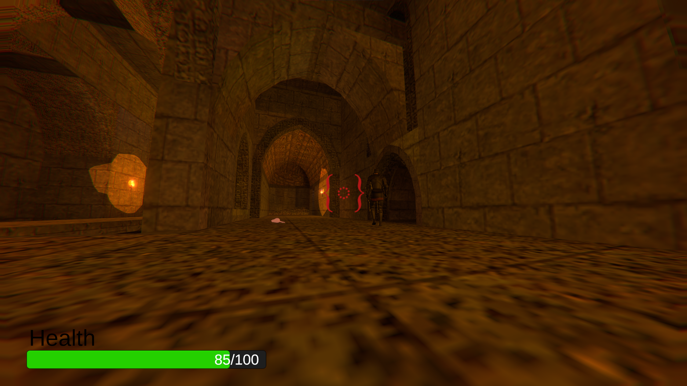
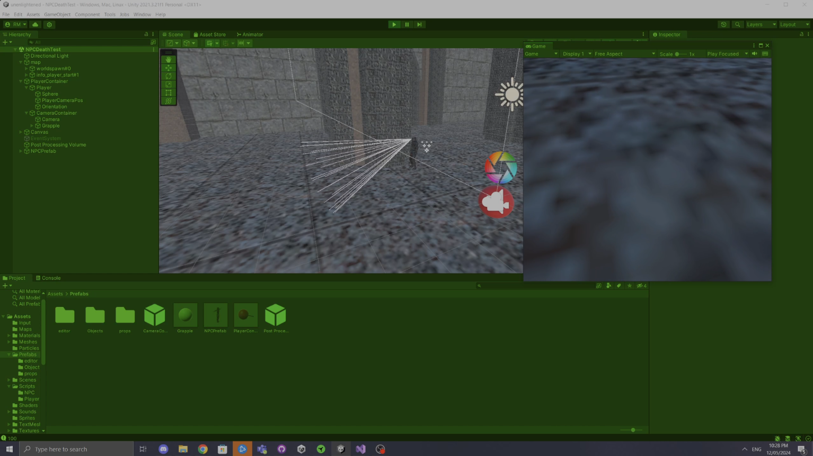
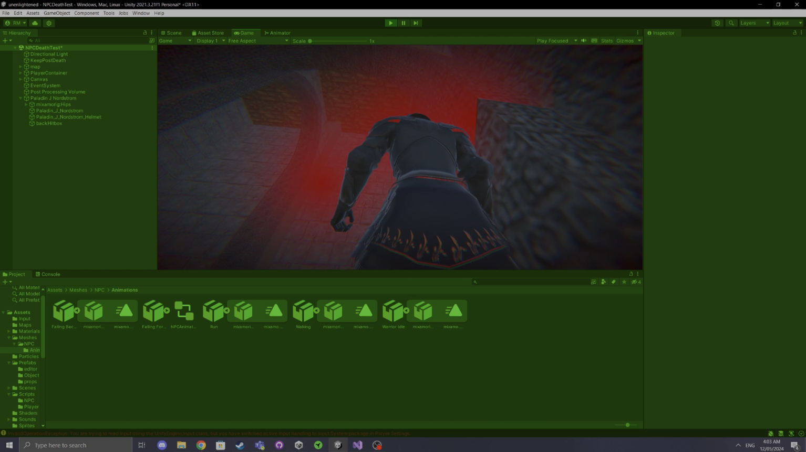
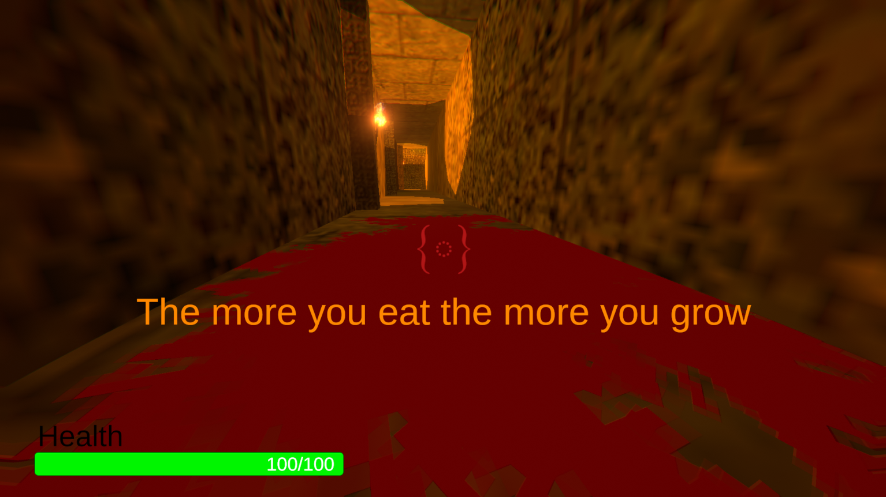
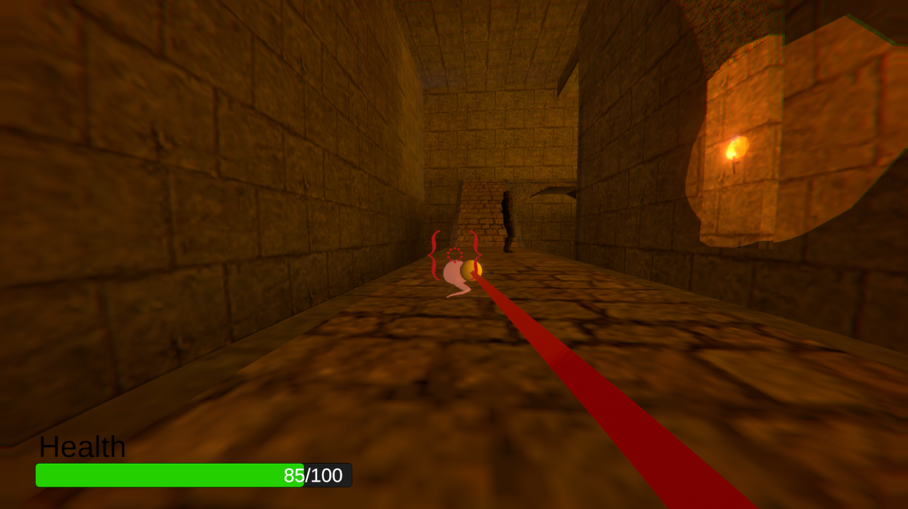

Unenlightened

Project Overview
Unenlightened is a game that I completed as part of my Games Project A unit at MQU. Typically, in the GPA unit you are supposed to design and start creating a game that you can then go on to finish and publish in Games Project B. However, mid semester two of my three groupmates decided they wouldn’t be continuing, and we had to rapidly pivot our plans.
By the end of the semester, we had completed a finished, albeit slightly buggy game that wasn’t too far off being releasable. However, this never occurred and I moved on and joined the Ransack! team for the remainder of the year.
The aim of the game was a horror game with unique and intricate movement tech, where you start as a small mass of flesh, and you consume entities around the map to get bigger and bigger, starting from mice to spiders to humans and eventually, the rat king.
Notable contributions:
- Level dressing assets – I created all of the various items around the map that can be interacted with, unfortunately their textures are broken in the final build.
- UI elements – I implemented all of the UI elements in the game.
- Human + AI – My biggest contribution to the game, the creation of the AI that controls all the human characters around map as well as all the other mechanics the come from the humans such as the damage on sight feature.
- And many smaller tweaks, fixes and optimisations
A pre-alpha build is playable here.
Project Footage / Trailer
Development Artifacts & Screenshots



